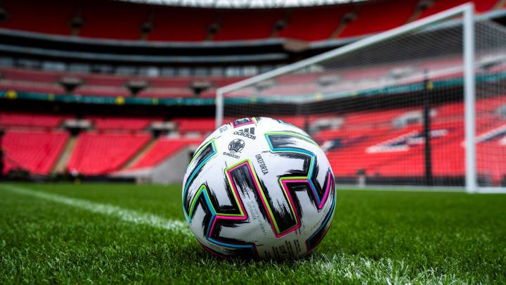
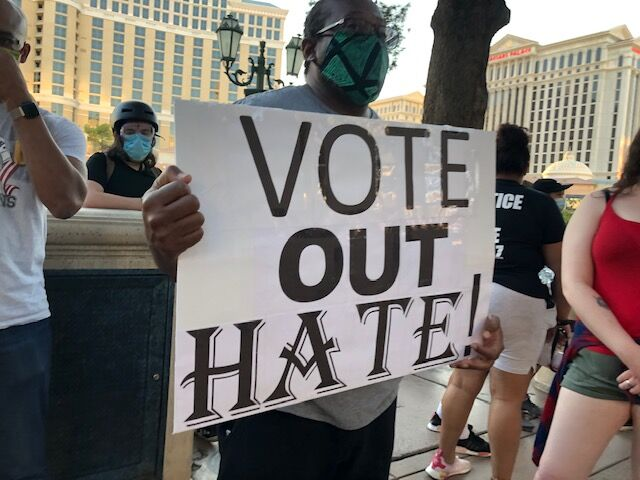
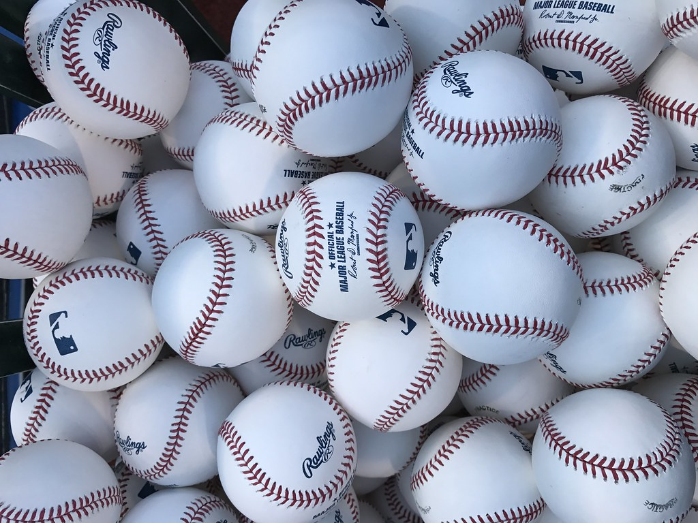

This site houses notes about my various data and analytics side projects. The cool thing about these notes is that they are all executable. Each of the blog posts is a jupyter notebook and has buttons for you to download the code from Github, or run them in the cloud in Binder or Colab. Just click one of the links on top and you can edit, run and remix them for yourself.
I hope you do. And leave a comment on the page or reach out to me if anything is interesting to you about this work. You can reach me in the links on the footer of this page. That's also where the source code for anything mentioned here can be found.
European FootballThis series of posts focuses on predicting European Football matches.
|
 |
Data ActivismI've been able to help out with data analysis for several decarceration projects in the Las Vegas Area. Most people get in touch with me through the Twitter bot that I created to increase awareness of the many ways we incarcerate people.Projects on this blog include:
|
 |
MLB Baseball PredictionsThis is a series of 5 posts focused on deciding how to bet Major League Baseball games. It starts with creating a baseline in part 1, where we look at how well the casinos predict outcomes. In part 2, we get our training data by web scraping, then create the first model with XGBoost. In part 3, we add power rankings and casino odds to our model and achieve parity with the casino. In part 4, we optimize the model with Hyperopt to achieve an more than a 2.5% edge over the casinos. And finally in part 5, we make a notebook for doing daily predictions and bet sizing according to the Kelly criterion. |
 |